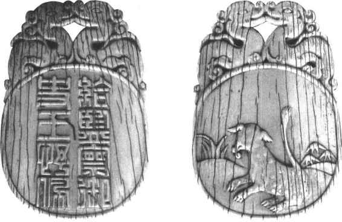

明朝建立初期，职官设置沿袭元朝，中央以中书省、都督府、御史台分掌行政、军事、监察。洪武十三年（1380），朱元璋撤销中书省，并规定永不设丞相，于是一切政务统归六部，由皇帝直接辖制。因政务繁多，朱元璋从翰林院等文翰机关指派官员加殿阁大学士衔，协助皇帝阅看奏章、草拟诏旨。明成祖时，命翰林院官员入值文渊阁，开始参与机务。仁宗、英宗以后，学士们多是几朝元老，权位愈重，这时内阁已类似唐朝的政事堂了。明世宗嘉靖以后，则“朝位班次，俱列六部之上”［16］，俨然是宰相之职。由于朱元璋有不准设丞相之约，于是人们称大学士为辅臣、阁老，对首席辅臣则称首辅、元辅。由于翰林学士仅为五品官，于是对内阁大学士多加六部尚书、侍郎等衔，以提高其地位，实际并不真管该部事务。凡大学士兼六部尚书者，一般尊称为“阁部”。
尽管内阁大学士类似于过去的宰相，但是仍与宰相有差别。因为内阁并不是一个正式的最高行政机构，六部也不是其下属部门，内阁仍带有皇帝私人秘书、顾问的性质。内阁的权力主要体现在“票拟”上，即对各处上呈的奏章提出处理意见，根据皇帝旨意草拟诏令，经皇帝批准后交六部办理。另一方面，内阁还要受制于宦官的“批红”。明朝宦官机构有四司、八局、十二监，其中司礼监的秉笔太监可代替皇帝用朱笔批示奏章公文，这叫做批红。这种做法为宦官弄权提供了方便。为此，内阁辅臣们往往也要俯首听命于宦官。
作为朝廷的诸卿，明清两朝都称为某寺卿，而所谓九卿也有了变化，是专指六部尚书以及都察院都御史、通政使、大理寺卿。
明朝六部的名称和职掌与过去基本一致。废中书省后，六部直接向皇帝负责，地位得到提高，各部尚书、侍郎的官位品级也得到提升。
通政使司设于洪武十年（1377），以通政使为其长官，掌受内外臣民之奏章建言或举告不法等事，并呈报皇帝。所以这是一个下情上达的机构，起着重要的作用。
大理寺以大理寺卿为首长。明朝大理寺不掌审刑，专门负责对重大案件的复核，这一点与唐宋作为最高审判机构完全不同。但是如遇有重大案件，则由大理寺、刑部、都察院共同审理，称为三司会审。如遇特大案件，又要由上述三法司会同各部尚书及通政使共同审理，称为圆审。
都察院是明朝的最高监察机构，详情见后。
明初原设大都督府，以大都督统领中外诸军事。洪武十三年，为防备军权过分集中，废大都督府，改置中、左、右、前、后五军都督府，各设左、右都督为其长官。五军都督府分别掌管京师及各地卫所的军队，虽统兵，但无调遣权。兵部掌管军官的任免、升调，发布军事政令，但不统领军队。军队的调遣权最终由皇帝掌握。（彩图5）
卫所是明代军队的基本编制单位，其防区在一府之内的设所，一府以上的设卫。各地卫所的军队受所驻省的都指挥使管辖，而各省都指挥使又归中央五军都督府统领。
关于中央朝廷的其他行政机构，过去的诸卿在明朝只保留了五个，其长官也改称“寺卿”，它们是：大理寺、太常寺、光禄寺、鸿胪寺、太仆寺。它们与国子监、钦天监合称五寺二监。此外还有翰林院、宗人府、詹事府、太医院等。
永乐十九年（1421），明成祖迁都北京，南京称为留都。迁都后，南京原有的各种官僚机构大多保留下来，与北京的中央职官相重复，但南京的一套职官缺少实权，常常被用来安置闲散或遭贬斥的官员。在明朝的政治斗争中，南京各官往往结成势力，与北京方面相角斗。
都察院为明朝的最高监察机构，以左右都御史、左右副都御史为其正、副长官，掌管内外监察，纠举不法。又依照当时的13省行政区，划分全国为13道监察区，设13道监察御史110人分别监察各地。（图5—11）明朝还建立了御史出巡地方的制度，即御史代表皇帝出巡地方，称为巡按御史，俗称八府巡按。他们品位虽然不高，但权力很大。此外，如地方有重大事故，朝廷要派带都御史衔的官员去处理，权力较巡按御史更大。这些人凡兼管一省行政和民政的称为巡抚；兼管一省军事的称为提督；兼管数省军、政、财的称为总督，仍隶属于都察院。这时的巡抚、提督、总督也还都属于临时差遣性的职务。

图5-11 明代监察御史王抒的腰牌
与都察院并立的监察机构还有六科给事中，负责稽核中央六部及其他机构事务，还可参与廷议和重大案件的审理。所以给事中虽位卑但权重。
此外如锦衣卫、东厂、西厂，虽有一定的监察职能，但实为特务机关，不能看成是正式的监察机构。
明朝地方行政系统为省、府（州）、县三级制。洪武九年（1376）改行中书省为承宣布政使司，但仍习惯称省。当时除南、北直隶外，全国共分13布政使司即13省。布政使司设左右布政使为长官，主管一省民政和财政。同时还设提刑按察使司，以提刑按察使为长官，掌管一省司法刑狱，纠劾不法；设都指挥使司，以都指挥使为长官，掌管一省军事，统领全省卫所，布政使、按察使、都指挥使合称三司，三权鼎立，虽可避免地方专权，但又不易相互配合，所以朝廷又往往派遣监察御史和部院大臣以总督、巡抚、巡按等名义去协调各方，解决问题。
省下设府，相当于宋元时的路。京师的顺天府和南京的应天府以府尹为其行政长官，其余诸府则以知府为长官。
府下设县或州，以知县、知州为长官。另有直隶州，地位与府等同，直接隶属于布政使司。
此外，在西南少数民族聚居区还设有土司，管理当地事务，如宣慰司、宣抚司等以及土知府、土知州、土知县等，都由当地头人任正职，并且世袭。这些特区相当于唐宋的羁縻府、州。
明朝初年，朱元璋便定下“封建诸王之制”，许多宗室子弟被封为王。明成祖时取消了诸王的政治、军事权力，只保留了他们的经济利益。
除了皇室封王外，文武官员封爵只有公、侯、伯三级，不一定都世袭。
明朝的勋多授予高级官员。文勋有10级，武勋有12级。
明朝的官品定为九品18级。又定文散官阶为42等，武散官阶30等。
明初官员俸禄全部给米，偶尔发钱钞。明成祖规定，高级官员以俸禄的十分之四五发给米，低级官员以十分之七八发米，余皆发钞。以后由于钞不断贬值，俸禄又有变动。
明朝官员的袍服，除颜色有区分外，对上面的绣花图案也有不同要求。在服色上，明朝规定一至四品为绯色，五至七品为青色，八、九品为绿色。对于官服所饰图案，规定上绣动物，自一品至九品，文官绣鸟类，武官绣兽类。类似这种做法在元朝已经开始实行，当时规定自一品至七品，在不同颜色的官服上要分别绣上大小不同的花朵，八、九品不绣。